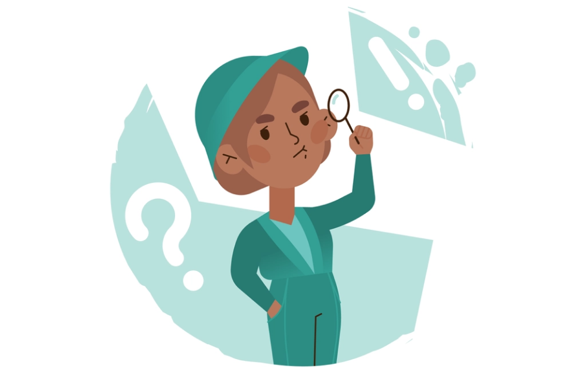

Fokus Pada Tujuan

Untuk tujuan hidup kamu akan sangat berarti, maka dalam hidup ini kita perlu memiliki tujuan hidup. Kita tentu memiliki tujuan untuk apa hidup, namun terkadang ada sesuatu yang perlu kamu putar balik, dengan kata lain tidak sesuai
dengan tujuan awal kamu. Salah satu alasan kamu tidak setuju dengan tujuan akhir adalah pengaruh orang lain. Ketika kamu melihat orang lain berhasil dengan cara kamu sendiri, kamu dapat meniru apa yang mereka lakukan untuk
membantu kamu sukses. Kamu tidak harus mengikuti jalan orang lain. kamu juga memiliki cara dan strategi sendiri untuk mencapai tujuan dan semua harapan dan impian kamu. Percayalah, jika kamu berhasil dan sukses dengan cara kamu
sendiri, kesuksesan kamu jauh lebih berarti daripada jika kamu mengikuti jalan orang lain.
Selanjutanya adalah perbaikan diri, pebaikan diri adalah cara yang sangat bagus untuk dapat fokus pada diri kita sendiri. Coba kita tuliskan daftar kemampuan apa yang ingin kita tingkatkan, dan tindakan apa yang perlu kita
terapkan untuk meraihnya. Saat orang lain mencibir pilihan hidup kita, kita sadar dan tahu dengan pasti bahwa kita sedang meningkatkan kualitas diri kita, dan tetap merasa percaya diri tanpa tersinggung dengan omongan orang lain.